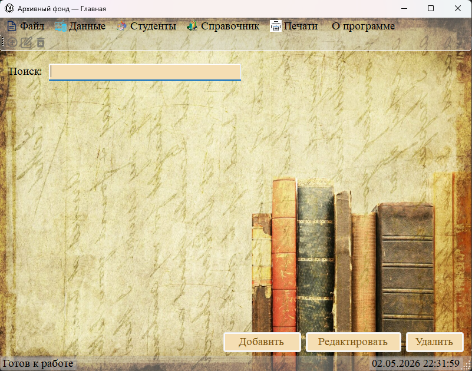

В этом разделе вы познакомитесь с приложением «Архивный фонд», узнаете о его назначении, возможностях, системных требованиях, а также о том, как настроить подключение к базе данных, пройти авторизацию и ориентироваться в главном окне.

Рис. 1. Главное окно приложения «Архивный фонд»
Содержание раздела:
| 1.1 | Назначение программы «Архивный фонд» | Для чего нужна программа, какие документы учитывает |
| 1.2 | Основные возможности | Обзор всех функций программы |
| 1.3 | Требования к системе | Аппаратные, программные требования и требования к MySQL |
| 1.4 | Настройка подключения к базе данных (config.ini) | Как настроить файл конфигурации для подключения к MySQL |
| 1.5 | Авторизация в системе | Как войти в программу, используя логин и пароль |
| 1.6 | Главное окно (обзор интерфейса) | Описание всех элементов главного окна |
Рекомендуется начинать изучение программы с этого раздела.